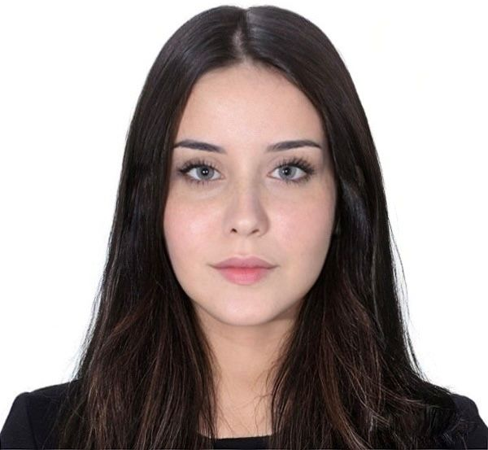

Mariem Bouchhioua
Financial Analyst/Corporate finance & reporting
Over two years running finance for an organization attached to the U.S. Embassy in Tunis, after audit work at EY and Forvis Mazars. MBA in International Business Management in Paris, Master’s in Corporate and Market Finance.

What I do
Corporate finance
Monthly close, trial balance, suspense accounts, provisions and cut-off. Receivables and payables, daily reporting in Excel then Sage.
Treasury and banking
Cash flow forecasts, USD/TND exchange risk, daily bank reconciliations across two countries, international transfers, signing authority.
Audit and control
Internal audit, main contact for external auditors, statutory audit under ISA standards, cut-off tests, confirmations, variance analysis.
Inventory and margins
FIFO and weighted average valuation, cycle counts and full physical inventory, markup coefficient by product category.
Supply chain and negotiation
Four shipments a year of about 100 references, chosen from best-seller reports and customer surveys. Negotiation with the main supplier and with customers.
Management
A team of eight, payroll for ten employees, direct support to the General Manager with cover in her absence, work across Tunisian and U.S. teams.
Experience
Financial Manager
- Treasury: forecasts, USD/TND exchange risk, daily reconciliations of the U.S. and Tunisian accounts, signing authority with two banks and the municipality.
- Close and reporting: accounting on Sage and QuickBooks, daily financial statements for management and the general assembly.
- Audit: internal audit, and main contact for external audit firms, including Big Four.
- Inventory: full inventory redone with a halt in activity to correct large discrepancies, then new counting and control methods.
- Events: introduced ticketing, nearly every event turned a profit.
- Energy line: database of about 100 customers, consumption tracking and billing calculated in Excel.
- Team: eight people, payroll for ten employees, errors caught in payroll and contracts.
Project Management Intern
- Client files from first contact to signature, needs analysis.
- Coordination of viewings, part of contract negotiations, progress reporting on property projects.
Financial Audit Intern
- More than ten statutory audit engagements (ISA, Tunisian accounting standards) in diplomatic, medical and distribution sectors.
- Testing of sales, purchases, inventory, treasury, fixed assets and payroll cycles; confirmations; support at physical inventory counts.
Final-year Assurance Internship
- Audit of the payroll and personnel cycle; work on treasury, inventory and payroll for a diplomatic client.
- Receivables and doubtful-debt provisions review; significant inventory differences escalated and adjusted.
Education and credentials
MBA · ISTEC Paris
International Business Management
Master’s in Corporate and Market Finance
École Internationale Supérieure Privée de Droit et des Affaires
Bachelor’s in Management
École Internationale Supérieure Privée de Droit et des Affaires
Microsoft Office Specialist
Excel 2016 · PowerPoint 2016
Beyond the numbers
Markets and innovation
Financial markets, trading, global economic trends and innovation in beauty and cosmetics.
MBA projects
ParisGo, Kraaft and Lyon Emballages: work in strategy, business development and project management.
Tools and languages
Excel, PowerPoint, Word, Sage, QuickBooks. Arabic (native), French C2, English C2, German B1.
Let’s talk.
Paris, France · available for roles in finance, audit and project management